General¶
To allow arbitrarily complex computations to be performed, PSI4 is built upon the Python interpreter, with modifications termed Psithon. Chapter 3 of the User’s Manual describes the non-standard Python associated with clean molecule, basis, and option specification in the PSI4 input file. This documentation addresses the pure Python side- what functions allow the efficient compiled code to be run, what functions post-process and interact with that output, and how the ordinary (or ambitious) user can extent PSI4’s functionality.
Warning
Python naming practices of file_that_includes_function.function_name() are followed below. In psi4 input files, it is only necessary to call the function name alone. That is, use energy('scf'), not driver.energy('scf').
Note
The options documented below are placed as arguments in the command that calls the Python function, not in the set globals block or with any other set command.
Note
Psithon keyword names and values are insensitive to case. The few exceptions are documented for the database() function, where case structure must match the database file.
Note
Boolean arguments can be specified by yes, on, true, or 1 for affirmative and no, off, false, or 0 for negative, all insensitive to case.
Energy¶
- driver.energy(name, **kwargs)[source]¶
Function to compute the single-point electronic energy.
Returns: (float) Total electronic energy in Hartrees. SAPT returns interaction energy. Psi variables: name calls method scf Hartree–Fock (HF) or density functional theory (DFT) mp2 2nd-order Moller-Plesset perturbation theory (MP2) df-mp2 MP2 with density fitting dcft density cumulant functional theory mcscf multiconfigurational self consistent field (SCF) dfcc coupled cluster with density fitting mp2c coupled MP2 (MP2C) mp2-drpa random phase approximation? sapt0 0th-order symmetry adapted perturbation theory (SAPT) sapt2 2nd-order SAPT, traditional definition sapt2+ SAPT including all 2nd-order terms sapt2+(3) SAPT including perturbative triples sapt2+3 sapt0-ct 0th-order SAPT plus charge transfer (CT) calculation sapt2-ct SAPT2 plus CT sapt2+-ct SAPT2+ plus CT sapt2+(3)-ct SAPT2+(3) plus CT sapt2+3-ct SAPT2+3 plus CT cc2 approximate coupled cluster singles and doubles (CC2) ccsd coupled cluster singles and doubles (CCSD) bccd Brueckner coupled cluster doubles (BCCD) cc3 approximate coupled cluster singles, doubles, and triples (CC3) ccsd(t) CCSD with perturbative triples bccd(t) BCCD with perturbative triples ccenergy expert full control over ccenergy module mp n n th-order Moller–Plesset perturbation theory zapt n n th-order z-averaged perturbation theory (ZAPT) cisd configuration interaction (CI) singles and doubles (CISD) cisdt CI singles, doubles, and triples (CISDT) cisdtq CI singles, doubles, triples, and quadruples (CISDTQ) ci n n th-order CI fci full configuration interaction (FCI) detci expert full control over detci module cphf coupled-perturbed Hartree-Fock? cpks coupled-perturbed Kohn-Sham? cis CI singles (CIS) tda Tamm-Dankoff approximation (TDA) tdhf time-dependent HF (TDHF) tddft time-dependent DFT (TDDFT) adc 2nd-order algebraic diagrammatic construction (ADC) eom-cc2 EOM-CC2 eom-ccsd equation of motion (EOM) CCSD eom-cc3 EOM-CC3 name calls method in Kallay’s MRCC program mrccsd CC through doubles mrccsdt CC through triples mrccsdtq CC through quadruples mrccsdtqp CC through quintuples mrccsdtqph CC through sextuples mrccsd(t) CC through doubles with perturbative triples mrccsdt(q) CC through triples with perturbative quadruples mrccsdtq(p) CC through quadruples with pertubative quintuples mrccsdtqp(h) CC through quintuples with pertubative sextuples mrccsd(t)_l mrccsdt(q)_l mrccsdtq(p)_l mrccsdtqp(h)_l mrccsdt-1a mrccsdtq-1a mrccsdtqp-1a mrccsdtqph-1a mrccsdt-1b mrccsdtq-1b mrccsdtqp-1b mrccsdtqph-1b mrcc2 mrcc3 mrcc4 mrcc5 mrcc6 mrccsdt-3 mrccsdtq-3 mrccsdtqp-3 mrccsdtqph-3 Parameters: - name (string) –
'scf' || 'df-mp2' || 'ci5' || etc.
First argument, usually unlabeled. Indicates the computational method to be applied to the system.
- bypass_scf (bool) –
'on' || 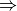 'off' 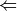
Indicates whether, for name values built atop of scf calculations, the scf step is skipped. Suitable when special steps are taken to get the scf to converge in an explicit preceeding scf step.
Examples : >>> # [1] Coupled-cluster singles and doubles calculation with psi code >>> energy('ccsd')
>>> # [2] Charge-transfer SAPT calculation with scf projection from small into requested basis >>> energy('sapt0-ct',cast_up=True)
>>> # [3] Arbitrary-order MPn calculation >>> energy('mp4')
- name (string) –
Optimize¶
Note
The derivative level type for driver.optimize() and driver.frequency() functions can be specified by energy, none, or 0 for 0th derivative, gradient, first, or 1 for 1st derivative, and hessian, second, or 2 for 2nd derivative.
- driver.optimize(name, **kwargs)[source]¶
Function to perform a geometry optimization.
Aliases : opt() Returns: (float) Total electronic energy of optimized structure in Hartrees. Psi variables: - CURRENT ENERGY¶
Note
Analytic gradients area available for all methods in the table below. Optimizations with other methods in the energy table proceed by finite differences.
Caution
Some features are not yet implemented. Buy a developer a coffee.
- Need to check that all methods do return electronic energy. I think gradient got changed at one point.
name calls method scf Hartree–Fock (HF) or density functional theory (DFT) mp2 2nd-order Moller-Plesset perturbation theory (MP2) ccsd coupled cluster singles and doubles (CCSD) ccsd(t) CCSD with perturbative triples eom-ccsd equation of motion (EOM) CCSD Parameters: - name (string) –
'scf' || 'df-mp2' || 'ci5' || etc.
First argument, usually unlabeled. Indicates the computational method to be applied to the database. May be any valid argument to driver.energy().
- func (function) –
gradient || energy || cbs
Indicates the type of calculation to be performed on the molecule. The default dertype accesses``’gradient’`` or 'energy', while 'cbs' performs a multistage finite difference calculation. If a nested series of python functions is intended (see Function Intercalls), use keyword opt_func instead of func.
- mode (string) –
'continuous' || 'sow' || 'reap'
Indicates whether the calculation required to complete the optimization are to be run in one file ('continuous') or are to be farmed out in an embarrassingly parallel fashion ('sow'/'reap'). For the latter, run an initial job with 'sow' and follow instructions in its output file.
- dertype (dertype) –
'gradient' || 'energy'
Indicates whether analytic (if available) or finite difference optimization is to be performed.
Examples : >>> # [1] Analytic scf optimization >>> optimize('scf')
>>> # [2] Finite difference mp3 optimization >>> opt('mp3')
>>> # [3] Forced finite difference ccsd optimization >>> optimize('ccsd', dertype=1)
Response¶
- driver.response(name, **kwargs)[source]¶
Function to compute linear response properties.
Returns: (float) Total electronic energy in Hartrees. Caution
Some features are not yet implemented. Buy a developer a coffee.
- Check that energy is actually being returned.
- Check if ther’re some PSI variables that ought to be set.
name calls method cc2 2nd-order approximate CCSD ccsd coupled cluster singles and doubles (CCSD) Parameters: name (string) – 'ccsd' || etc.
First argument, usually unlabeled. Indicates the computational method to be applied to the system.
Examples : >>> # [1] CCSD-LR properties calculation >>> response('ccsd')
Frequency¶
- driver.frequency(name, **kwargs)[source]¶
Function to compute harmonic vibrational frequencies.
Aliases : frequencies(), freq() Returns: (float) Total electronic energy in Hartrees. Caution
Some features are not yet implemented. Buy a developer a coffee.
- RAK, why are you adding OPTKING options as GLOBALS? And shouldn’t they be Py-side not C-side options?
- Put in a dictionary, so IRREPS can be called by symmetry element or ‘all’
- Make frequency look analogous to gradient, especially in matching derivative levels. Make dertype actually a dertype type.
Parameters: - name (string) –
'scf' || 'df-mp2' || 'ci5' || etc.
First argument, usually unlabeled. Indicates the computational method to be applied to the system.
- dertype (dertype) –
'hessian' || 'gradient' || 'energy'
Indicates whether analytic (if available- they’re not), finite difference of gradients (if available) or finite difference of energies is to be performed.
- irrep (int) –
-1 || 1 || etc.
Indicates which symmetry block of vibrational freqiencies to be computed. 1 represents 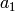, requesting only the totally symmetric modes. -1 indicates a full frequency calculation.
Examples : >>> # [1] <example description> >>> <example python command>
>>> # [2] Frequency calculation for b2 modes through finite difference of gradients >>> frequencies('scf', dertype=1, irrep=4)
Counterpoise Correct¶
- wrappers.cp(name[, func, check_bsse])[source]¶
The cp function computes counterpoise-corrected two-body interaction energies for complexes composed of arbitrary numbers of monomers.
Aliases : counterpoise_correct(), counterpoise_correction() Returns: (float) Counterpoise-corrected interaction energy in kcal/mol Psi variables: Caution
Some features are not yet implemented. Buy a developer a coffee.
- No values of func besides energy have been tested.
- Table print-out needs improving. Add some PSI variables.
Parameters: - name (string) –
'scf' || 'ccsd(t)' || etc.
First argument, usually unlabeled. Indicates the computational method to be applied to the molecule. May be any valid argument to driver.energy(); however, SAPT is not appropriate.
- func (function) –
energy || optimize || cbs
Indicates the type of calculation to be performed on the molecule and each of its monomers. The default performs a single-point energy('name'), while optimize perfoms a geometry optimization on each system, and cbs performs a compound single-point energy. If a nested series of python functions is intended (see Function Intercalls), use keyword cp_func instead of func.
- check_bsse (bool) –
'on' || 'off'
Indicates whether to additionally compute un-counterpoise corrected monomers and thus obtain an estimate for the basis set superposition error.
Examples : >>> # [1] counterpoise-corrected mp2 interaction energy >>> cp('dfmp2')
Database¶
- wrappers.database(name, db_name[, func, mode, cp, rlxd, symm, zpe, benchmark, tabulate, subset])[source]¶
Function to access the molecule objects and reference energies of popular chemical databases.
Aliases : db() Returns: (float) Mean absolute deviation of the database in kcal/mol Psi variables: - db_name DATABASE MEAN SIGNED DEVIATION¶
- db_name DATABASE MEAN ABSOLUTE DEVIATION¶
- db_name DATABASE ROOT-MEAN-SQUARE DEVIATION¶
Note
It is very easy to make a database from a collection of xyz files using the script $PSIDATADIR/databases/ixyz2database.pl. See Creating a New Database for details.
Caution
Some features are not yet implemented. Buy a developer some coffee.
- In sow/reap mode, use only global options (e.g., the local option set by set scf scf_type df will not be respected).
Parameters: - name (string) –
'scf' || 'sapt0' || 'ccsd(t)' || etc.
First argument, usually unlabeled. Indicates the computational method to be applied to the database. May be any valid argument to driver.energy().
- db_name (string) –
'BASIC' || 'S22' || 'HTBH' || etc.
Second argument, usually unlabeled. Indicates the requested database name, matching the name of a python file in psi4/lib/databases. Consult that directory for available databases and literature citations.
- func (function) –
energy || optimize || cbs
Indicates the type of calculation to be performed on each database member. The default performs a single-point energy('name'), while optimize perfoms a geometry optimization on each reagent, and cbs performs a compound single-point energy. If a nested series of python functions is intended (see Function Intercalls), use keyword db_func instead of func.
- mode (string) –
'continuous' || 'sow' || 'reap'
Indicates whether the calculations required to complete the database are to be run in one file ('continuous') or are to be farmed out in an embarrassingly parallel fashion ('sow'/'reap'). For the latter, run an initial job with 'sow' and follow instructions in its output file.
- cp (bool) –
'on' || 'off'
Indicates whether counterpoise correction is employed in computing interaction energies. Use this option and NOT the wrappers.cp() function for BSSE correction in database(). Option available (See Available Databases) only for databases of bimolecular complexes.
- rlxd (bool) –
'on' || 'off'
Indicates whether correction for deformation energy is employed in computing interaction energies. Option available (See Available Databases) only for databases of bimolecular complexes with non-frozen monomers, e.g., HBC6.
- symm (bool) –
'on' || 'off'
Indicates whether the native symmetry of the database reagents is employed ('on') or whether it is forced to
 symmetry
('off'). Some computational methods (e.g., SAPT) require no
symmetry, and this will be set by database().
symmetry
('off'). Some computational methods (e.g., SAPT) require no
symmetry, and this will be set by database(). - zpe (bool) –
'on' || 'off'
Indicates whether zero-point-energy corrections are appended to single-point energy values. Option valid only for certain thermochemical databases. Disabled until Hessians ready.
- benchmark (string) –
'default' || 'S22A' || etc.
Indicates whether a non-default set of reference energies, if available (See Available Databases), are employed for the calculation of error statistics.
- tabulate (array of strings) –
[] || ['scf total energy', 'natom'] || etc.
Indicates whether to form tables of variables other than the primary requested energy. Available for any PSI variable.
- subset (string or array of strings) –
Indicates a subset of the full database to run. This is a very flexible option and can be used in three distinct ways, outlined below. Note that two take a string and the last takes an array. See Available Databases for available values.
- 'small' || 'large' || 'equilibrium'
- Calls predefined subsets of the requested database, either 'small', a few of the smallest database members, 'large', the largest of the database members, or 'equilibrium', the equilibrium geometries for a database composed of dissociation curves.
- 'BzBz_S' || 'FaOOFaON' || 'ArNe' || etc.
- For databases composed of dissociation curves, individual curves can be called by name. Consult the database python files for available molecular systems. The choices for this keyword are case sensitive and must match the database python file
- [1,2,5] || ['1','2','5'] || ['BzMe-3.5', 'MeMe-5.0'] || etc.
- Specify a list of database members to run. Consult the database python files for available molecular systems. The choices for this keyword are case sensitive and must match the database python file
Examples : >>> # [1] Two-stage SCF calculation on short, equilibrium, and long helium dimer >>> db('scf','RGC10',cast_up='sto-3g',subset=['HeHe-0.85','HeHe-1.0','HeHe-1.5'], tabulate=['scf total energy','natom'])
>>> # [2] Counterpoise-corrected interaction energies for three complexes in S22 >>> # Error statistics computed wrt an old benchmark, S22A >>> database('dfmp2','S22',cp=1,subset=[16,17,8],benchmark='S22A')
>>> # [3] SAPT0 on the neon dimer dissociation curve >>> db('sapt0',subset='NeNe',cp=0,symm=0,db_name='RGC10')
>>> # [4] Optimize system 1 in database S22, producing tables of scf and mp2 energy >>> db('mp2','S22',db_func=optimize,subset=[1], tabulate=['mp2 total energy','current energy'])
>>> # [5] CCSD on the smallest systems of HTBH, a hydrogen-transfer database >>> database('ccsd','HTBH',subset='small', tabulate=['ccsd total energy', 'mp2 total energy'])
Output¶
At the beginning of a database job is printed a listing of the individual system calculations which will be performed. The output snippet below is from the example job [1] above. It shows each reagent required for the subset of database reactions requested. Note that this is an un-counterpoise-corrected example, and the wrapper is smart enough to compute only once the monomer whose energy will be subtracted from each of the three dimers.
RGC1-HeHe-0.85-dimer
RGC1-He-mono-unCP
RGC1-HeHe-1.0-dimer
RGC1-HeHe-1.5-dimer
At the end of the job, the Requested Energy table is printed that gives the total energies for the requested model chemistry for each reagent and each reaction, as well as the stoichoimetric weights by which the reagent energies are transfromed into the reaction energy. In this case, the dimer is +1 and the monomer is -2, indicating the the interaction energy is computed from dimer less first monomer less second (identical) monomer. Error statistics are computed with respect to the reference energies stored in the database. One of these, the mean absolute deviation, is returned by the wrapper as an ordinary Python variable. (For databases without a stored reference energy, e.g., BASIC, large and meaningless numbers are printed for error.) The other two tables tabulate the PSI variables requested through keyword tabulate, in this case the total SCF energy and the number of atoms in each reagent.
==> Scf Total Energy <==
-----------------------------------------------------------------------------------
Reaction Reaction Value Reagent 1 Reagent 2
Value Wt Value Wt
-----------------------------------------------------------------------------------
RGC1-HeHe-0.85 0.00011520 -5.71020576 1 -2.85516048 -2
RGC1-HeHe-1.0 0.00000153 -5.71031943 1 -2.85516048 -2
RGC1-HeHe-1.5 -0.00000000 -5.71032096 1 -2.85516048 -2
-----------------------------------------------------------------------------------
==> Natom <==
-----------------------------------------------------------------------------------
Reaction Reaction Value Reagent 1 Reagent 2
Value Wt Value Wt
-----------------------------------------------------------------------------------
RGC1-HeHe-0.85 0.00000000 2.00000000 1 1.00000000 -2
RGC1-HeHe-1.0 0.00000000 2.00000000 1 1.00000000 -2
RGC1-HeHe-1.5 0.00000000 2.00000000 1 1.00000000 -2
-----------------------------------------------------------------------------------
==> Requested Energy <==
-----------------------------------------------------------------------------------
Reaction Reaction Energy Error Reagent 1 Reagent 2
Ref Calc [kcal/mol] [H] Wt [H] Wt
-----------------------------------------------------------------------------------
RGC1-HeHe-0.85 0.0376 0.0723 0.0347 -5.71020576 1 -2.85516048 -2
RGC1-HeHe-1.0 -0.0219 0.0010 0.0228 -5.71031943 1 -2.85516048 -2
RGC1-HeHe-1.5 -0.0029 -0.0000 0.0029 -5.71032096 1 -2.85516048 -2
-----------------------------------------------------------------------------------
Minimal Dev 0.0029
Maximal Dev 0.0347
Mean Signed Dev 0.0201
Mean Absolute Dev 0.0201
RMS Dev 0.0240
-----------------------------------------------------------------------------------
Available Databases¶
Below are documented for particular databases the availibility of the generic database function options cp, rlxd, benchmark, and the string options for subset. The full reagent member list, which can also be used in conjunction with subset, is not included here for consideration of space and may be found in the database file. The database Python files are very readable and should be consulted for more particular questions.
ACENES
- cp 'off' || 'on'
- rlxd 'off'
- subset
- 'small'
- 'large'
- 'FIRST3' benzene, napthalene, and anthracene dimers
- 'FIRST5' benzene - pentacene dimers
- 'FIRST10' benzene - decacene dimers
BAKERJCC93
- cp 'off'
- rlxd 'off'
- subset
- 'small'
- 'large'
BASIC
- cp 'off'
- rlxd 'off'
- subset ['h2o', 'nh3', 'ch4']
BBI
- cp 'off' || 'on'
- rlxd 'off'
CFLOW
- cp 'off' || 'on'
- rlxd 'off'
- subset
- 'small'
- 'large'
- 'equilibrium'
- 'Polyenes' equilibrium for linear polyene dimers for 2 through 16 monomer carbons
- 'cBzBz' 5-point dissociation curve for benzene dimer
- 'c2BzBz' 5-point dissociation curve for napthalene-benzene complex
- 'c2Bz2Bz' 5-point dissociation curve for napthalene dimer
- 'c3Bz2Bz' 5-point dissociation curve for anthracene-napthalene complex
- 'c3Bz3Bz' 5-point dissociation curve for anthracene dimer
- 'c4Bz3Bz' 5-point dissociation curve for tetracene-anthracene complex
- 'Arenes' equilibrium for benzene dimer through tetracene-anthracene complex linear arenes
- 'cArenes' 5-point curves around benzene dimer through tetracene-anthracene complex linear arenes
- 'cPulay' 4-point dissociation curve for bowl-in-bowl corannulene dimer
- 'Pulay' Pulay bowl-in-bowl corannulene dimer dissociation curve and extra point
- 'Grimme60' Grimme corannulene dimer, C60 @ buckybowl, and C60 @ buckycatcher
- 'Grimme70' Grimme C70 @ buckycatcher at three orientations
- 'Paper' linear polyene dimers, equilibrium arene complexes, Pulay corannulene dimer curve, and Grimme corannulene dimer and C60 complexes
- 'cPaper' linear polyene dimers, arene complex curves, Pulay corannulene dimer curve, and Grimme corannulene dimer and C60 complexes
CORE
Database of Pulay corannulene structures. Subsumed into CFLOW.
- cp 'off' || 'on'
- rlxd 'off'
G2
- cp 'off'
- rlxd 'off'
HBC6
- cp 'off' || 'on'
- rlxd 'off' || 'on'
- benchmark
- 'HBC60' Thanthiriwatte et al. JCTC 7 88 (2011).
- 'HBC6A' Marshall et al. JCP 135 194102 (2011).
- 'HBC6ARLX' Sherrill group, unpublished.
- subset
- 'small'
- 'large'
- 'equilibrium'
HSG
- cp 'off' || 'on'
- rlxd 'off'
- benchmark
- 'HSG0' Faver et al. JCTC 7 790 (2011).
- 'HSGA' Marshall et al. JCP 135 194102 (2011).
- subset
- 'small'
- 'large'
HTBH
- cp 'off'
- rlxd 'off'
- subset
- 'small'
- 'large'
JSCH
- cp 'off' || 'on'
- rlxd 'off'
- subset
- 'small'
- 'large'
NBC10
- cp 'off' || 'on'
- rlxd 'off'
- benchmark
- 'NBC100' Burns et al. JCP 134 084107 (2011).
- 'NBC10A' Marshall et al. JCP 135 194102 (2011).
- subset
- 'small'
- 'large'
- 'equilibrium'
- 'BzBz_S' dissociation curve for benzene dimer, sandwich
- 'BzBz_T' dissociation curve for benzene dimer, t-shaped
- 'BzBz_PD34' dissociation curve for benzene dimer, parallel displaced by 3.4A
- 'BzH2S' dissociation curve for benzene-H2S
- 'BzMe' dissociation curve for benzene-methane
- 'MeMe' dissociation curve for methane dimer
- 'PyPy_S2' dissociation curve for pyridine dimer, sandwich
- 'PyPy_T3' dissociation curve for pyridine dimer, t-shaped
- 'BzBz_PD32' dissociation curve for benzene dimer, parallel displaced by 3.2A
- 'BzBz_PD36' dissociation curve for benzene dimer, parallel displaced by 3.6A
NHTBH
- cp 'off'
- rlxd 'off'
- subset
- 'small'
- 'large'
RGC10
- cp 'off' || 'on'
- rlxd 'off'
- subset
- 'small'
- 'large'
- 'equilibrium'
- 'HeHe' 18-point dissociation curve for helium dimer
- 'HeNe' 18-point dissociation curve for helium-neon complex
- 'HeAr' 18-point dissociation curve for helium-argon complex
- 'HeKr' 18-point dissociation curve for helium-krypton complex
- 'NeNe' 18-point dissociation curve for neon dimer
- 'NeAr' 18-point dissociation curve for neon-argon complex
- 'NeKr' 18-point dissociation curve for neon-krypton complex
- 'ArAr' 18-point dissociation curve for argon dimer
- 'ArKr' 18-point dissociation curve for argon-krypton complex
- 'KrKr' 18-point dissociation curve for krypton dimer
S22
- cp 'off' || 'on'
- rlxd 'off'
- benchmark
- 'S220' Jurecka et al. PCCP 8 1985 (2006).
- 'S22A' Takatani et al. JCP 132 144104 (2010).
- 'S22B' Marshall et al. JCP 135 194102 (2011).
- subset
- 'small' water dimer, methane dimer, ethene-ethine
- 'large' adenine-thymine
- 'HB' hydrogen-bonded systems
- 'MX' mixed-influence systems
- 'DD' dispersion-dominated systems
S22by5
- cp 'off' || 'on'
- rlxd 'off'
- subset
- 'small'
- 'large'
- 'equilibrium'
- 'mol1' five-point (0.9, 1.0, 1.2, 1.5, 2.0) 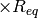 dissociation curve for molecule 1
- ...
- 'mol22' five-point (0.9, 1.0, 1.2, 1.5, 2.0) dissociation curve for molecule 22
S66
- cp 'off' || 'on'
- rlxd 'off'
- subset
- 'small'
- 'large'
- 'HB' hydrogen-bonded systems
- 'MX' mixed-influence systems
- 'DD' dispersion-dominated systems
SSI
- cp 'off' || 'on'
- rlxd 'off'
Complete Basis Set¶
- wrappers.complete_basis_set(name[, scf_basis, scf_scheme, corl_wfn, corl_basis, corl_scheme, delta_wfn, delta_wfn_lesser, delta_basis, delta_scheme, delta2_wfn, delta2_wfn_lesser, delta2_basis, delta2_scheme])[source]¶
Function to define a multistage energy method from combinations of basis set extrapolations and delta corrections and condense the components into a minimum number of calculations.
Aliases : cbs() Returns: (float) – Total electronic energy in Hartrees Psi variables: - CBS TOTAL ENERGY¶
- CBS REFERENCE ENERGY¶
- CBS CORRELATION ENERGY¶
- CURRENT ENERGY¶
- CURRENT REFERENCE ENERGY¶
- CURRENT CORRELATION ENERGY¶
Caution
Some features are not yet implemented. Buy a developer a coffee.
- Methods beyond basic scf, mp2, ccsd, ccsd(t) not yet hooked in through PSI variables, df-mp2 in particular.
- No scheme defaults for given basis zeta number, so scheme must be specified explicitly.
- No way to tell function to boost fitting basis size for all calculations.
- No way to extrapolate def2 family basis sets
- Need to add more extrapolation schemes
As represented in the equation below, a CBS energy method is defined in four sequential stages (scf, corl, delta, delta2) covering treatment of the reference total energy, the correlation energy, a delta correction to the correlation energy, and a second delta correction. Each is activated by its stage_wfn keyword and is only allowed if all preceding stages are active.
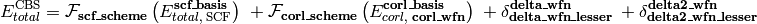
Here, 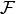 is an energy or energy extrapolation scheme, and the following also hold.
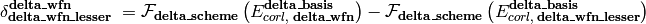
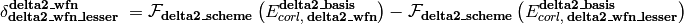
A translation of this ungainly equation to example [5] below is as follows. In words, this is a double- and triple-zeta 2-point Helgaker-extrapolated CCSD(T) coupled-cluster correlation correction appended to a triple- and quadruple-zeta 2-point Helgaker-extrapolated MP2 correlation energy appended to a SCF/aug-cc-pVQZ reference energy.
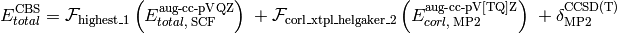
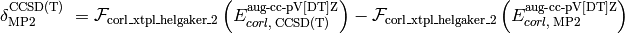
- Energy Methods
The presence of a stage_wfn keyword is the indicator to incorporate (and check for stage_basis and stage_scheme keywords) and compute that stage in defining the CBS energy.
- The cbs() function requires, at a minimum, name='scf' and scf_basis
- keywords to be specified for reference-step only jobs and name and corl_basis keywords for correlated jobs.
Parameters: - name (string) –
'scf' || 'ccsd' || etc.
First argument, usually unlabeled. Indicates the computational method for the correlation energy, unless only reference step to be performed, in which case should be 'scf'. Overruled if stage_wfn keywords supplied.
- corl_wfn (string) –
'mp2' || 'ccsd(t)' || etc.
Indicates the energy method for which the correlation energy is to be obtained. Can also be specified with name or as the unlabeled first argument to the function.
- delta_wfn (string) –
'ccsd' || 'ccsd(t)' || etc.
Indicates the (superior) energy method for which a delta correction to the correlation energy is to be obtained.
- delta_wfn_lesser (string) –
'mp2' || 'ccsd' || etc.
Indicates the inferior energy method for which a delta correction to the correlation energy is to be obtained.
- delta2_wfn (string) –
'ccsd' || 'ccsd(t)' || etc.
Indicates the (superior) energy method for which a second delta correction to the correlation energy is to be obtained.
- delta2_wfn_lesser (string) –
'mp2' || 'ccsd(t)' || etc.
Indicates the inferior energy method for which a second delta correction to the correlation energy is to be obtained.
- Basis Sets
Currently, the basis set set through set commands have no influence on a cbs calculation.
Parameters: - scf_basis (string) –
corl_basis || 'cc-pV[TQ]Z' || 'jun-cc-pv[tq5]z' || '6-31G*' || etc.
Indicates the sequence of basis sets employed for the reference energy. If any correlation method is specified, scf_basis can default to corl_basis.
- corl_basis (string) –
'cc-pV[TQ]Z' || 'jun-cc-pv[tq5]z' || '6-31G*' || etc.
Indicates the sequence of basis sets employed for the correlation energy.
- delta_basis (string) –
'cc-pV[TQ]Z' || 'jun-cc-pv[tq5]z' || '6-31G*' || etc.
Indicates the sequence of basis sets employed for the delta correction to the correlation energy.
- delta2_basis (string) –
'cc-pV[TQ]Z' || 'jun-cc-pv[tq5]z' || '6-31G*' || etc.
Indicates the sequence of basis sets employed for the second delta correction to the correlation energy.
- Schemes
Transformations of the energy through basis set extrapolation for each stage of the CBS definition. A complaint is generated if number of basis sets in stage_basis does not exactly satisfy requirements of stage_scheme. An exception is the default, 'highest_1', which uses the best basis set available. See Extrapolation Schemes for all available schemes.
Parameters: - scf_scheme (function) –
highest_1 || scf_xtpl_helgaker_3 || etc.
Indicates the basis set extrapolation scheme to be applied to the reference energy.
- corl_scheme (function) –
highest_1 || corl_xtpl_helgaker_2 || etc.
Indicates the basis set extrapolation scheme to be applied to the correlation energy.
- delta_scheme (function) –
highest_1 || corl_xtpl_helgaker_2 || etc.
Indicates the basis set extrapolation scheme to be applied to the delta correction to the correlation energy.
- delta2_scheme (function) –
highest_1 || corl_xtpl_helgaker_2 || etc.
Indicates the basis set extrapolation scheme to be applied to the second delta correction to the correlation energy.
Examples : >>> # [1] replicates with cbs() the simple model chemistry scf/cc-pVDZ: set basis cc-pVDZ energy('scf') >>> cbs('scf', scf_basis='cc-pVDZ')
>>> # [2] replicates with cbs() the simple model chemistry mp2/jun-cc-pVDZ: set basis jun-cc-pVDZ energy('mp2') >>> cbs('mp2', corl_basis='jun-cc-pVDZ')
>>> # [3] DTQ-zeta extrapolated scf reference energy >>> cbs('scf', scf_basis='cc-pV[DTQ]Z', scf_scheme=scf_xtpl_helgaker_3)
>>> # [4] DT-zeta extrapolated mp2 correlation energy atop a T-zeta reference >>> cbs('mp2', corl_basis='cc-pv[dt]z', corl_scheme=corl_xtpl_helgaker_2)
>>> # [5] a DT-zeta extrapolated coupled-cluster correction atop a TQ-zeta extrapolated mp2 correlation energy atop a Q-zeta reference >>> cbs('mp2', corl_basis='aug-cc-pv[tq]z', corl_scheme=corl_xtpl_helgaker_2, delta_wfn='ccsd(t)', delta_basis='aug-cc-pv[dt]z', delta_scheme=corl_xtpl_helgaker_2)
>>> # [6] a D-zeta ccsd(t) correction atop a DT-zeta extrapolated ccsd cluster correction atop a TQ-zeta extrapolated mp2 correlation energy atop a Q-zeta reference >>> cbs('mp2', corl_basis='aug-cc-pv[tq]z', corl_scheme=corl_xtpl_helgaker_2, delta_wfn='ccsd', delta_basis='aug-cc-pv[dt]z', delta_scheme=corl_xtpl_helgaker_2, delta2_wfn='ccsd(t)', delta2_wfn_lesser='ccsd', delta2_basis='aug-cc-pvdz')
>>> # [7] cbs() coupled with database() >>> database('mp2', 'BASIC', subset=['h2o','nh3'], symm='on', func=cbs, corl_basis='cc-pV[tq]z', corl_scheme=corl_xtpl_helgaker_2, delta_wfn='ccsd(t)', delta_basis='sto-3g')
Output¶
At the beginning of a cbs() job is printed a listing of the individual energy calculations which will be performed. The output snippet below is from the example job [2] above. It shows first each model chemistry needed to compute the aggregate model chemistry requested through cbs(). Then, since, for example, an energy('ccsd(t)') yields CCSD(T), CCSD, MP2, and SCF energy values, the wrapper condenses this task list into the second list of minimum number of calculations which will actually be run.
Naive listing of computations required.
scf / aug-cc-pvqz for SCF TOTAL ENERGY
mp2 / aug-cc-pvtz for MP2 CORRELATION ENERGY
mp2 / aug-cc-pvqz for MP2 CORRELATION ENERGY
ccsd(t) / aug-cc-pvdz for CCSD(T) CORRELATION ENERGY
ccsd(t) / aug-cc-pvtz for CCSD(T) CORRELATION ENERGY
mp2 / aug-cc-pvdz for MP2 CORRELATION ENERGY
mp2 / aug-cc-pvtz for MP2 CORRELATION ENERGY
Enlightened listing of computations required.
mp2 / aug-cc-pvqz for MP2 CORRELATION ENERGY
ccsd(t) / aug-cc-pvdz for CCSD(T) CORRELATION ENERGY
ccsd(t) / aug-cc-pvtz for CCSD(T) CORRELATION ENERGY
At the end of a cbs() job is printed a summary section like the one below. First, in the components section, are listed the results for each model chemistry available, whether required for the cbs job (*) or not. Next, in the stages section, are listed the results for each extrapolation. The energies of this section must be dotted with the weightings in column Wt to get the total cbs energy. Finally, in the CBS section, are listed the results for each stage of the cbs procedure. The stage energies of this section sum outright to the total cbs energy.
==> Components <==
----------------------------------------------------------------------------------
Method / Basis Rqd Energy [H] Variable
----------------------------------------------------------------------------------
scf / aug-cc-pvqz * -1.11916375 SCF TOTAL ENERGY
mp2 / aug-cc-pvqz * -0.03407997 MP2 CORRELATION ENERGY
scf / aug-cc-pvdz -1.11662884 SCF TOTAL ENERGY
mp2 / aug-cc-pvdz * -0.02881480 MP2 CORRELATION ENERGY
ccsd(t) / aug-cc-pvdz * -0.03893812 CCSD(T) CORRELATION ENERGY
ccsd / aug-cc-pvdz -0.03893812 CCSD CORRELATION ENERGY
scf / aug-cc-pvtz -1.11881134 SCF TOTAL ENERGY
mp2 / aug-cc-pvtz * -0.03288936 MP2 CORRELATION ENERGY
ccsd(t) / aug-cc-pvtz * -0.04201004 CCSD(T) CORRELATION ENERGY
ccsd / aug-cc-pvtz -0.04201004 CCSD CORRELATION ENERGY
----------------------------------------------------------------------------------
==> Stages <==
----------------------------------------------------------------------------------
Stage Method / Basis Wt Energy [H] Scheme
----------------------------------------------------------------------------------
scf scf / aug-cc-pvqz 1 -1.11916375 highest_1
corl mp2 / aug-cc-pv[tq]z 1 -0.03494879 corl_xtpl_helgaker_2
delta ccsd(t) / aug-cc-pv[dt]z 1 -0.04330347 corl_xtpl_helgaker_2
delta mp2 / aug-cc-pv[dt]z -1 -0.03460497 corl_xtpl_helgaker_2
----------------------------------------------------------------------------------
==> CBS <==
----------------------------------------------------------------------------------
Stage Method / Basis Energy [H] Scheme
----------------------------------------------------------------------------------
scf scf / aug-cc-pvqz -1.11916375 highest_1
corl mp2 / aug-cc-pv[tq]z -0.03494879 corl_xtpl_helgaker_2
delta ccsd(t) - mp2 / aug-cc-pv[dt]z -0.00869851 corl_xtpl_helgaker_2
total CBS -1.16281105
----------------------------------------------------------------------------------
Extrapolation Schemes¶
- wrappers.highest_1(**largs)[source]¶
Scheme for total or correlation energies with a single basis or the highest zeta-level among an array of bases. Used by wrappers.complete_basis_set().
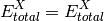
- wrappers.scf_xtpl_helgaker_2(**largs)[source]¶
Extrapolation scheme for reference energies with two adjacent zeta-level bases. Used by wrappers.complete_basis_set().
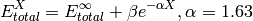
- wrappers.scf_xtpl_helgaker_3(**largs)[source]¶
Extrapolation scheme for reference energies with three adjacent zeta-level bases. Used by wrappers.complete_basis_set().
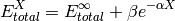
- wrappers.corl_xtpl_helgaker_2(**largs)[source]¶
Extrapolation scheme for correlation energies with two adjacent zeta-level bases. Used by wrappers.complete_basis_set().
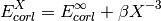
Fractional Occupation¶
Beginner Psithon Programming¶
Note
No recompile of the PSI program is necessary for changes made to files in $PSIDATADIR, including those described below.
Defining a Method Alias¶
Since quantum chemical methods in PSI4 are accessed through Python functions, and most important quantities are available as PSI variables, it is straightforward to create aliases to commonly run calculations or to define hybrid methods. The $PSIDATADIR/python/aliases.py file is intended for editing by the user for this purpose.
As an example, the MP2.5 method is the average of MP2 and MP3. The latter is available through the arbitrary order MPn code and returns all lower energies along with it in PSI variables. The following is basic code that will compute and return the MP2.5 energy.
def run_mp2_5(name, **kwargs):
energy('mp3', **kwargs)
e_scf = PsiMod.get_variable('SCF TOTAL ENERGY')
ce_mp2 = PsiMod.get_variable('MP2 CORRELATION ENERGY')
ce_mp3 = PsiMod.get_variable('MP3 CORRELATION ENERGY')
ce_mp25 = 0.5 * (ce_mp2 + ce_mp3)
e_mp25 = e_scf + ce_mp25
print """ MP2.5 total energy: %16.8f\n""" % (e_mp25)
print """ MP2.5 correlation energy: %16.8f\n""" % (ce_mp25)
return e_mp25
Compare the above to the method that resides in aliases.py. The rationale for the changes is indicated in the comments below.
def run_mp2_5(name, **kwargs):
lowername = name.lower() # handy variable with name keyword in lowercase
kwargs = kwargs_lower(kwargs) # removes case sensitivity in keyword names
# Run detci calculation and collect conventional quantities
energy('mp3', **kwargs)
e_scf = PsiMod.get_variable('SCF TOTAL ENERGY')
ce_mp2 = PsiMod.get_variable('MP2 CORRELATION ENERGY')
ce_mp3 = PsiMod.get_variable('MP3 CORRELATION ENERGY')
e_mp2 = e_scf + ce_mp2 # reform mp2 and mp3 total energies for printing
e_mp3 = e_scf + ce_mp3
# Compute quantities particular to MP2.5
ce_mp25 = 0.5 * (ce_mp2 + ce_mp3)
e_mp25 = e_scf + ce_mp25
PsiMod.set_variable('MP2.5 CORRELATION ENERGY', ce_mp25) # add new method's important results
PsiMod.set_variable('MP2.5 TOTAL ENERGY', e_mp25) # to PSI variable repository
PsiMod.set_variable('CURRENT CORRELATION ENERGY', ce_mp25)
PsiMod.set_variable('CURRENT ENERGY', e_mp25) # geometry optimizer tracks this variable, permits
# MP2.5 finite difference optimizations
# build string of title banner and print results
banners = ''
banners += """PsiMod.print_out('\\n')\n"""
banners += """banner(' MP2.5 ')\n"""
banners += """PsiMod.print_out('\\n')\n\n"""
exec banners
tables = ''
tables += """ SCF total energy: %16.8f\n""" % (e_scf)
tables += """ MP2 total energy: %16.8f\n""" % (e_mp2)
tables += """ MP2.5 total energy: %16.8f\n""" % (e_mp25)
tables += """ MP3 total energy: %16.8f\n\n""" % (e_mp3)
tables += """ MP2 correlation energy: %16.8f\n""" % (ce_mp2)
tables += """ MP2.5 correlation energy: %16.8f\n""" % (ce_mp25)
tables += """ MP3 correlation energy: %16.8f\n""" % (ce_mp3)
PsiMod.print_out(tables) # prints nice header and table of all involved quantities to output file
return e_mp25
One final step is necessary. At the end of the aliases.py file, add the following line.
procedures['energy']['mp2.5'] = run_mp2_5
This permits the newly defined MP2.5 method to be called in the input file with the following command.
energy('mp2.5')
Creating a New Database¶
A necessary consideration in constructing a database is the distinction between reagents and reactions. A reagent is a single molecular system (may be a dimer) whose geometry you are possession of and whose electronic energy may be of interest. A reaction is a combination of one or more reagent energies whose value you are interested in and a reference value for which you may or may not be in possession of. A few examples follow. In a database of interaction energies, the reagents are dimers and their component monomers (usually derived from the dimer geometry), and the reactions are the dimer less monomers energies. In a database of barrier heights, the reagents are reactants, products, and transition-state structures, and the reactions are the transition-states less minimum-energy structures. Possibly you may have a collection of structures to simply be acted upon in parallel, in which case the structures are both the reagents and the reactions. The role of the database.py file is to collect arrays and dictionaries that define the geometries of reagents (GEOS), their combination into reactions (RXNM & ACTV), available reference values for reactions (BIND), and brief comments for reagents and reactions (TAGL). The journey from reagent geometries to functional database.py file is largely automated, in a process described below.
- Prepare geometry files
Assemble xyz files for all intended reagent systems in a directory. Follow the rules below for best results. The filename for each xyz file should be the name of the system. lowercase or MixedCase is preferable (according to Sherrill lab convention). Avoid dashes and dots in the name as python won’t allow them. If you’re determined to have dashes and dots, they must be replaced by other characters in the process_input line, then translated back in the GEOS section; see NBC10.py for an example.
- The first line for each xyz file should be the number of atoms in the system.
- The second line for each xyz file can be blank (interpreted as no comment), anything (interpreted as a comment), or two integers and anything (interpreted as charge, multiplicity, and remainder as comment).
- The third and subsequent lines have four fields: the element symbol and the three cartesian coordinates in angstroms. The atom lines should not contain any dummy atoms (what’s the use in cartesian form). For dimer systems, an algorithm is used to apportion the atoms into two fragments; thus the atoms need not be arranged with all fragmentA atoms before all fragmentB atoms. The algorithm will fail for very closely arranged fragments. For dimers, any charge and multiplicity from the second line will be applied to fragmentA (python); charge and multiplicity may need to be redistributed later in the editing step.
Run script ixyz2database.pl
Move into the directory where all your xyz files are located. Run the script in place, probably as $PSIDATADIR/databases/ixyz2database.pl. It will ask a number of questions about your intended database and generate a python file named for your database. Uppercase is preferable for database names (according to Sherrill lab convention). Note your choice for the route variable for the next step.
Edit file database.py
- All routes. Optionally, rearrange the order of reactions in HRXN as this will define the order for the database.
- All routes. Optionally, add sources for geometries and any reference data to commented lines above the dbse variable.
- All routes. Optionally, the comment lines of TAGL may be edited in plain text.
- All routes. Optionally, fill in reference values (in kcal/mol) into BIND.
- All routes. Optionally, define alternate sets of reference values in the array BIND_ALTREF in the database.py file to be called in a psi4 input file as benchmark=’ALTREF’ . See S22.py as an example.
- All routes. Optionally, fill in the least computationally expensive 2-3 reactions into HRXN_SM and the most expensive into HRXN_LG
- All routes. Optionally, define subsets of reactions in the array SUBSETARRAY = [‘reaction’, ‘reaction’] in the database.py file to be called in a psi4 input file as subset=’SUBSETARRAY’. See NBC10.py as an example.
- All routes. Necessarily (if charge and multiplicity not read in through line2 = cgmp and nor all neutral singlets), assign correct charge and multiplicity to all reagents.
- Route 3. Necessarily (if any charge and multiplicity specified for the whole reagent is not intended for fragmentA with neutral singlet fragmentB), apportion charge and multiplicity properly between fragmentA and fragmentB. This is not likely necessary if all subsystems are neutral singlets.
- Route 2. Necessarily, define the reagents that contribute to each reaction by filling in the empty single-quotes in ACTV. Add or delete lines as necessary if for each reaction more or fewer than three reagents contribute. See NHTBH.py as an example.
- Route 2. Necessarily, define the mathematical contribution of reagents to reactions by adding a number (most often +1 or -1) for each reagent to the RXNM of each reaction. See NHTBH.py as an example.
- All routes. Necessarily, copy your new database into $PSIDATADIR/databases.
Function Intercalls¶
For many of the PSI4 Python functions described above, it makes scientific sense that they could be called in combination. For instance, one could optimize all the reagents in a database or compute a counterpoise-corrected interaction energy with an extrapolated method. The table below outlines permitted intercalls between functions, showing that db(opt(cbs(energy()))) is allowed, while db(cp(energy())) is not. This table is not yet validated for calls with cp().
Caller Callee cp db opt cbs energy cp — Y Y Y db — Y Y Y opt — — Y Y cbs — — — Y energy — — — —
- The command db(opt(cbs(energy()))) is actually expressed as db(..., db_func=opt, opt_func=cbs). The perhaps expected final argument of cbs_func=energy is not necessary since energy() is always the function called by default. Also, the outermost internal function call (db_func above can be called as just func. Several examples of intercalls between Python functions can be found in sample input pywrap_all.
- All keyword arguments are passed along to each function traversed in the Python driver, so there should be no concern for separating them, grouping them, or designating them for a particular function when undertaking a nested calculation. Where the same keyword is used by multiple functions, prefixes are added, e.g., db_mode and opt_mode.
- Function intercalls should not be used in sow/reap mode.
Embarrassing Parallelism¶
what functions; no intercalls; no local set; special section in parameter list
Psithon Programming Best Practices¶
Thy python functions shall always have final argument **kwargs, that they may take in and pass on keywords meant for other functions. Yea, even the run_mcscf(), and run_ccsd() -type functions that have no use for kwargs. The exceptions are python functions that are only helpers called by a driver function.
Python functions should read the kwargs dictionary and (possibly) add to it. Functions should not pop or remove keywords from kwargs, even those keywords meaningful only to itself. This will ensure that the complete kwargs is available for pickling and sow/reap procedures. The exception is the molecule argument, which is read by the first function that gets ahold of it. This first function activates the molecule and pops it out of kwargs, effectively setting molecule for all subsequent functions. The code below should suffice.
# Make sure the molecule the user provided is the active one if 'molecule' in kwargs: activate(kwargs['molecule']) del kwargs['molecule'] molecule = PsiMod.get_active_molecule() molecule.update_geometry()
Preferrably, the python function signature (for functions intended to be called in input files) is function(name, **kwargs). For functions that have other positional keywords, please bundle them into kwargs at earliest convenience (see wrappers.database() argument db_name for example).
After the docstring, the first two lines of your function should be the ones below. The first provides a case insensitive handle to the name argument value. The second converts all the kwargs dictionary keys to lowercase versions of themselves, so that input files can be case insensitive.
lowername = name.lower() kwargs = kwargs_lower(kwargs)
Case sensitivity for kwargs dictionary values still needs to be handled. The first line below shows how to convert argument values to lowercase for matching. When not matching a whole value such that regular expressions are needed, the second line below performs a case insensitive match.
if (kwargs['db_mode'].lower() == 'continuous'): if re.match(r'^sapt', name, flags=re.IGNORECASE):
Match boolean keywords (db_cp in the example below) with expressions like the following, which allow case insensitive yes/true/on/1/no/false/off/0 user input. If your argument’s value is a derivative level, similarly, use input.der0th, input.der1st, and input.der2nd.
if input.yes.match(str(db_cp)): elif input.no.match(str(db_cp)):
For keywords that might be used in other functions as well as your own, prepend the argument name with a short representation of your function name. For example, there are keywords cp_func, db_func, and opt_func to request what python function, if not energy(), is called by cp(), database(), and optimize().
Upon checking in a new python file, edit the file psi4/doc/userman/source/index.rst and follow the instructions therein that your file may be autodocumented here.
Write docstrings! For a major function intended for use in input files, start with the skeleton docstring in psi4/lib/python/example_docstring and replace anything that looks like <this>. For a behind-the-scenes function or if you don’t want the bother of dealing with reStructuredText, just write an ordinary docstring. It will get slurped into the documentation in plain text.
Your python function should follow PEP8 conventions (without the line-length restriction). I’m aiming for files to pass the line below, unless for good reason.
>>> pep8.py -r --ignore=E501 pythonfile.py
Your python function should not prevent any test case (make tests, NOT make longtests) from passing. A test case(s) should be written and checked in for any major python function, so that others do not break your code. If most of your work was on the python (as opposed to c++) side, the test case prefix pywrap_ is suggested.
Be sure to set any new PSI variables through lines like those below. Especially if the function returns an energy, set the ‘current energy’ variable. This last is needed to communicate with the optimizer.
PsiMod.set_variable('MP2.5 CORRELATION ENERGY', ce_mp25) PsiMod.set_variable('MP2.5 TOTAL ENERGY', e_mp25) PsiMod.set_variable('CURRENT ENERGY', e_mp25)
Once your python function is fairly stable on its own, it’s potential for interoperability with energy()/opt()/cp()/db()/cbs()/etc. should be evaluated. If it makes physical sense that it should work, you should strive to make that interoperability a reality. Some steps:
If any interoperability is possible, define an argument xx_func, where xx is a short name for your function. Add near the top of your function code like the below (less the final two lines). The net result of this code is that if the user specifies no *_func arguments, then energy() gets called. If the user defines xx_func, then its value gets called. If the user defines func, then its value gets reassigned to xx_func, func itself is deleted, and xx_func() gets called. Whatever is getting called is stored in func within the function.
# Establish function to call if not('xx_func' in kwargs): if ('func' in kwargs): kwargs['xx_func'] = kwargs['func'] del kwargs['func'] else: kwargs['xx_func'] = energy func = kwargs['xx_func'] if not func: raise ValidationError('Function \'%s\' does not exist to be called by wrapper counterpoise_correct.' % (func.__name__)) if (func is db): raise ValidationError('Wrapper xx is unhappy to be calling function \'%s\'.' % (func.__name__))
If specific interoperabilities are known, code them in. For example, if xx shouldn’t call db, add the last two lines above to the xx function. If db shouldn’t call xx, add the following two lines below to the db function.
if (func is xx): raise ValidationError('Wrapper database is unhappy to be calling function \'%s\'.' % (func.__name__))
Create a multipart test case that runs some intercalls between your function and others (akin to pywrap_all). In trials, permute the order of calls a few times to expose any calls that don’t clean up after themselves and need further attention.
When all is validated, add your findings to the great interoperability table in the documentation.
PsiMod Methods¶
Molecule Methods¶
Expert¶
aliases¶
Module with functions that call upon those in modules proc, driver, and wrappers.
- Place in this file quickly defined procedures such as
- aliases for complex methods
- simple modifications to existing methods
- aliases.run_mp2_5(name, **kwargs)[source]¶
Function that computes MP2.5 energy from results of a DETCI MP3 calculation.
>>> energy('mp2.5')
- aliases.run_plugin_ccsd_serial(name, **kwargs)[source]¶
Function encoding sequence of PSI module and plugin calls so that Eugene DePrince’s ccsd_serial plugin can be called via driver.energy().
>>> energy('plugin_ccsd_serial')
- aliases.run_plugin_omega(name, **kwargs)[source]¶
Function encoding sequence of PSI module and plugin calls, as well as typical options, to access Rob Parrish’s omega plugin.
>>> energy('plugin_omega')
- aliases.sherrillgroup_gold_standard(name='mp2', **kwargs)[source]¶
Function to call the quantum chemical method known as ‘Gold Standard’ in the Sherrill group. Uses wrappers.complete_basis_set() to evaluateo the following expression. Two-point extrapolation of the correlation energy performed according to wrappers.corl_xtpl_helgaker_2().
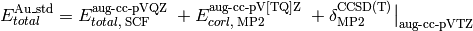
>>> energy('sherrillgroup_gold_standard')
driver¶
Module with a procedures dictionary specifying available quantum chemical methods and functions driving the main quantum chemical functionality, namely single-point energies, geometry optimizations, response properties, and vibrational frequency calculations.
- driver.gradient(name, **kwargs)[source]¶
Function complementary to optimize(). Carries out one gradient pass, deciding analytic or finite difference.
molutil¶
Module with utility functions that act on molecule objects.
- molutil.extract_cluster_indexing(mol, cluster_size=0)[source]¶
Function to returns a LIST of all subclusters of the molecule mol of real size cluster_size. If cluster_size = 0, returns all possible combinations of cluster size.
- molutil.extract_clusters(mol, ghost=True, cluster_size=0)[source]¶
Function to return all subclusters of the molecule mol of real size cluster_size and all other atoms ghosted if ghost equals true, all other atoms discarded if ghost is false. If cluster_size = 0, returns all possible combinations of cluster size.
physconst¶
proc¶
Module with functions that encode the sequence of PSI module calls for each of the name values of the energy(), optimize(), response(), and frequency() function.
- proc.run_adc(name, **kwargs)[source]¶
Function encoding sequence of PSI module calls for an algebraic diagrammatic construction calculation.
Caution
Get rid of active molecule lines- should be handled in energy.
- proc.run_bccd(name, **kwargs)[source]¶
Function encoding sequence of PSI module calls for a Brueckner CCD calculation.
- proc.run_bccd_t(name, **kwargs)[source]¶
Function encoding sequence of PSI module calls for a Brueckner CCD(T) calculation.
- proc.run_cc_gradient(name, **kwargs)[source]¶
Function encoding sequence of PSI module calls for a CCSD and CCSD(T) gradient calculation.
- proc.run_cc_response(name, **kwargs)[source]¶
Function encoding sequence of PSI module calls for a CC2 and CCSD calculation.
- proc.run_ccenergy(name, **kwargs)[source]¶
Function encoding sequence of PSI module calls for a CCSD, CC2, and CC3 calculation.
- proc.run_dcft(name, **kwargs)[source]¶
Function encoding sequence of PSI module calls for a density cumulant functional theory calculation.
- proc.run_detci(name, **kwargs)[source]¶
Function encoding sequence of PSI module calls for a configuration interaction calculation, namely FCI, CIn, MPn, and ZAPTn.
- proc.run_dfcc(name, **kwargs)[source]¶
Function encoding sequence of PSI module calls for a density-fitted coupled-cluster calculation.
- proc.run_dfmp2(name, **kwargs)[source]¶
Function encoding sequence of PSI module calls for a density-fitted MP2 calculation.
Caution
Get rid of madness-era restart file
- proc.run_eom_cc(name, **kwargs)[source]¶
Function encoding sequence of PSI module calls for an EOM-CC calculation, namely EOM-CC2, EOM-CCSD, and EOM-CC3.
- proc.run_eom_cc_gradient(name, **kwargs)[source]¶
Function encoding sequence of PSI module calls for an EOM-CCSD gradient calculation.
- proc.run_libfock(name, **kwargs)[source]¶
Function encoding sequence of PSI module calls for a calculation through libfock, namely RCPHF, RCIS, RTDHF, RTDA, and RTDDFT.
- proc.run_mcscf(name, **kwargs)[source]¶
Function encoding sequence of PSI module calls for a multiconfigurational self-consistent-field calculation.
- proc.run_mp2(name, **kwargs)[source]¶
Function encoding sequence of PSI module calls for a MP2 calculation.
- proc.run_mp2_gradient(name, **kwargs)[source]¶
Function encoding sequence of PSI module calls for a MP2 gradient calculation.
- proc.run_mp2c(name, **kwargs)[source]¶
Function encoding sequence of PSI module calls for a coupled MP2 calculation.
- proc.run_mp2drpa(name, **kwargs)[source]¶
Function encoding sequence of PSI module calls for a MP2-DRPA calculation.
- proc.run_mrcc(name, **kwargs)[source]¶
Function that prepares environment and input files for a calculation calling Kallay’s MRCC code.
- proc.run_psimrcc(name, **kwargs)[source]¶
Function encoding sequence of PSI module calls for a PSIMRCC computation using a reference from the MCSCF module
- proc.run_psimrcc_scf(name, **kwargs)[source]¶
Function encoding sequence of PSI module calls for a PSIMRCC computation using a reference from the SCF module
- proc.run_sapt(name, **kwargs)[source]¶
Function encoding sequence of PSI module calls for a SAPT calculation of any level.
- proc.run_sapt_ct(name, **kwargs)[source]¶
Function encoding sequence of PSI module calls for a charge-transfer SAPT calcuation of any level.
- proc.run_scf(name, **kwargs)[source]¶
Function encoding sequence of PSI module calls for a self-consistent-field theory (HF & DFT) calculation.
procutil¶
Module with utility functions used by several Python functions.
- procutil.format_kwargs_for_input(filename, lmode=1, **kwargs)[source]¶
Function to pickle to file filename the options dictionary kwargs. Mode lmode =2 pickles appropriate settings for reap mode. Used to capture Python options information for distributed (sow/reap) input files.
- procutil.format_molecule_for_input(mol)[source]¶
Function to return a string of the output of input.process_input() applied to the XYZ format of molecule mol. Used to capture molecule information for distributed (sow/reap) input files.
- procutil.format_options_for_input()[source]¶
Function to return a string of commands to replicate the current state of user-modified options. Used to capture C++ options information for distributed (sow/reap) input files.
Caution
Some features are not yet implemented. Buy a developer a coffee.
- Does not cover local (as opposed to global) options.
- Does not work with array-type options.
psiexceptions¶
Module with non-generic exceptions classes.
pubchem¶
Queries the PubChem database using a compound name (i.e. 1,3,5-hexatriene) to obtain a molecule string that can be passed to Molecule.
results = getPubChemObj("1,3,5-hexatriene")
Results is an array of results from PubChem matches to your query.
for entry in results:
entry["CID"] => PubChem compound identifer
entry["IUPAC"] => IUPAC name for the resulting compound
entry["PubChemObj"] => instance of PubChemObj for this compound
entry["PubChemObj"].getMoleculeString() => returns a string compatible
with PSI4's Molecule creation
text¶
Module with utility classes and functions related to data tables and text.
- class text.Table(rows=(), row_label_width=10, row_label_precision=4, cols=(), width=16, precision=10)[source]¶
Class defining a flexible Table object for storing data.
Function to print text to output file in a banner of minimum width width and minimum three-line height for type = 1 or one-line height for type = 2.
util¶
Module with utility functions for use in input files.
- util.compare_integers(expected, computed, label)[source]¶
Function to compare two integers. Prints util.success() when value computed matches value expected. Performs a system exit on failure. Used in input files in the test suite.
- util.compare_matrices(expected, computed, digits, label)[source]¶
Function to compare two matrices. Prints util.success() when elements of matrix computed match elements of matrix expected to number of digits. Performs a system exit on failure to match symmetry structure, dimensions, or element values. Used in input files in the test suite.
- util.compare_strings(expected, computed, label)[source]¶
Function to compare two strings. Prints util.success() when string computed exactly matches string expected. Performs a system exit on failure. Used in input files in the test suite.
- util.compare_values(expected, computed, digits, label)[source]¶
Function to compare two values. Prints util.success() when value computed matches value expected to number of digits. Performs a system exit on failure. Used in input files in the test suite.
- util.compare_vectors(expected, computed, digits, label)[source]¶
Function to compare two vectors. Prints util.success() when elements of vector computed match elements of vector expected to number of digits. Performs a system exit on failure to match symmetry structure, dimension, or element values. Used in input files in the test suite.
- util.set_num_threads(nthread)[source]¶
Function to reset the number of threads to parallelize across.
- util.success(label)[source]¶
Function to print a ‘label...PASSED’ line to screen. Used by util.compare_values() family when functions pass.
wrappers¶
Module with functions that call the four main driver functions: driver.energy, driver.optimize, driver.response, and driver.frequency.
- wrappers.call_function_in_1st_argument(funcarg, **largs)[source]¶
Function to make primary function call to energy(), opt(), etc. with options dictionary largs. Useful when funcarg to call is stored in variable.
- wrappers.drop_duplicates(seq)[source]¶
Function that given an array seq, returns an array without any duplicate entries. There is no guarantee of which duplicate entry is dropped.
- wrappers.reconstitute_bracketed_basis(needarray)[source]¶
Function to reform a bracketed basis set string from a sequential series of basis sets (e.g, form ‘cc-pv[q5]z’ from array [cc-pvqz, cc-pv5z]). The basis set array is extracted from the f_basis field of a NEED dictionary in wrappers.complete_basis_set(). Result is used to print a nicely formatted basis set string in the results table.
- wrappers.split_menial(menial)[source]¶
Function used by wrappers.complete_basis_set() to separate menial ‘scftot’ into [scf, tot] and ‘mp2corl’ into [mp2, corl].
- wrappers.tblhead(tbl_maxrgt, tbl_delimit, ttype)[source]¶
Function that prints the header for the changable-width results tables in db(). tbl_maxrgt is the number of reagent columns the table must plan for. tbl_delimit is a string of dashes of the correct length to set off the table. ttype is 1 for tables comparing the computed values to the reference or 2 for simple tabulation and sum of the computed values.
- wrappers.validate_bracketed_basis(basisstring)[source]¶
Function to transform and validate basis sets for cbs(). A basis set with no paired square brackets is passed through with zeta level 0 (e.g., ‘6-31+G(d,p)’ is returned as [6-31+G(d,p)] and [0]). A basis set with square brackets is checked for sensible sequence and Dunning-ness and returned as separate basis sets (e.g., ‘cc-pV[Q5]Z’ is returned as [cc-pVQZ, cc-pV5Z] and [4, 5]). Note that this function has no communication with the basis set library to check if the basis actually exists. Used by wrappers.complete_basis_set().
- wrappers.validate_scheme_args(functionname, **largs)[source]¶
Function called by each extrapolation scheme in wrappers.complete_basis_set(). Checks that all the input arguments are present and suitable so that the scheme function can focus on defining the extrapolation.